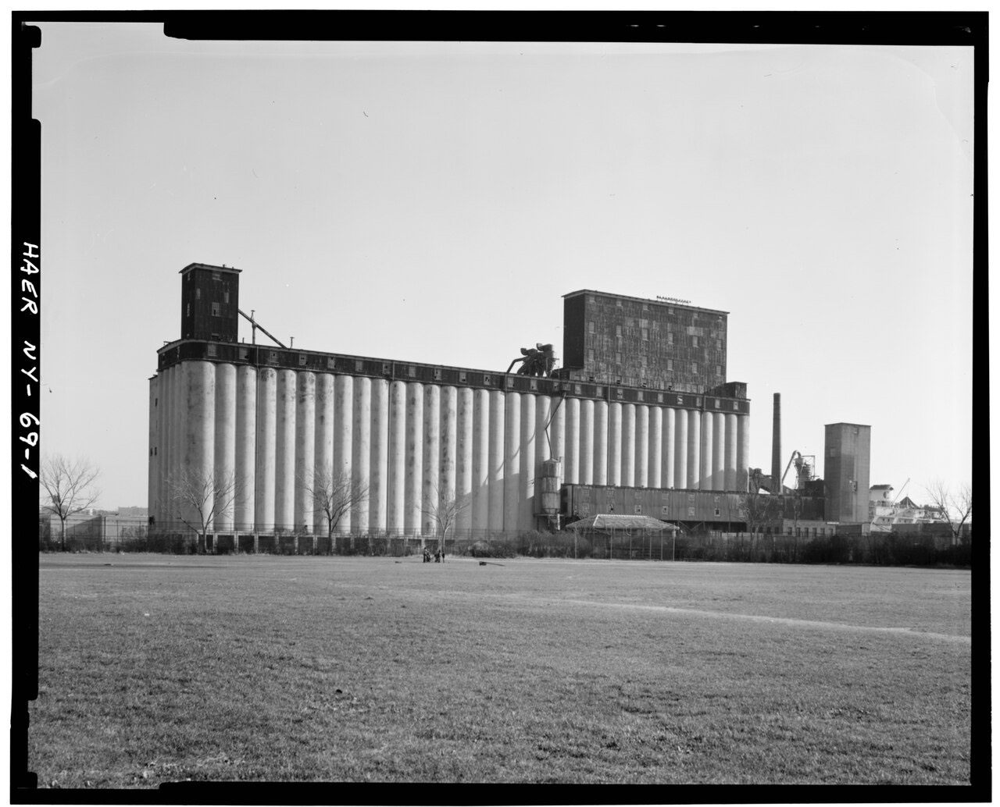
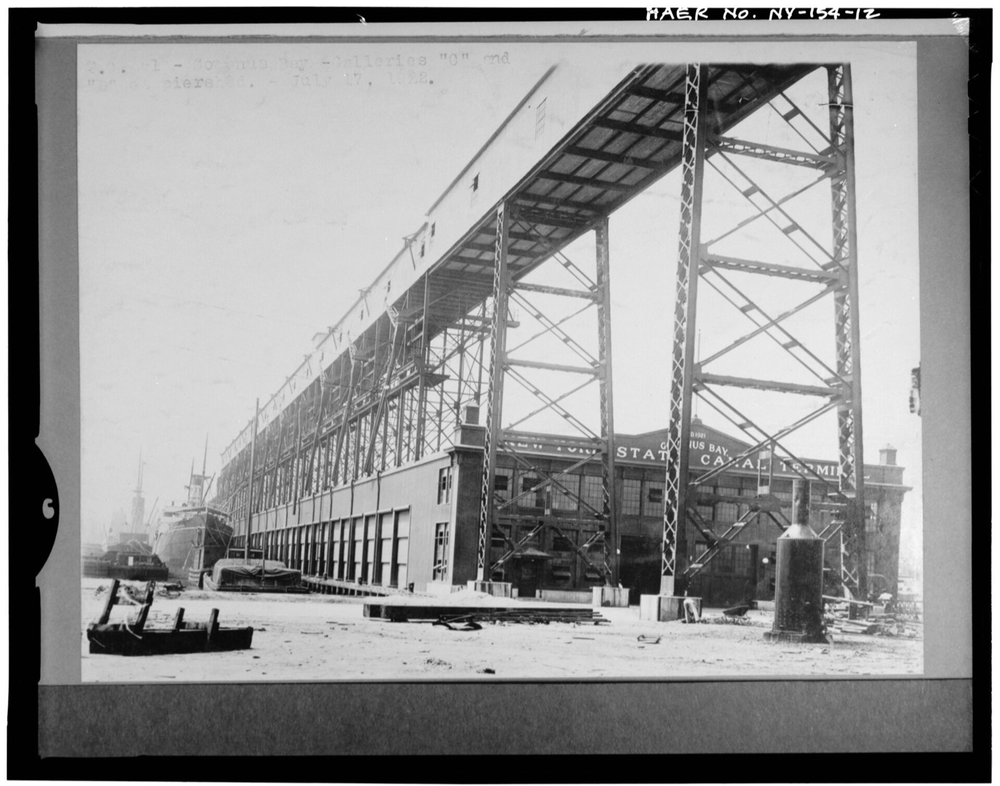
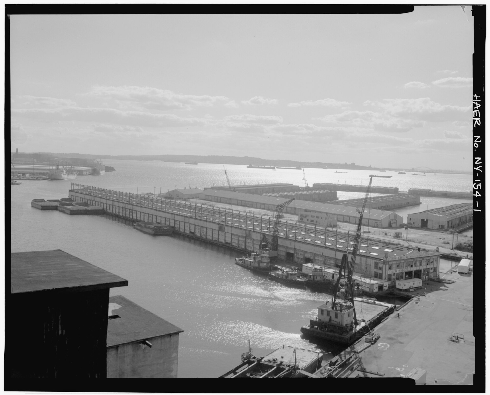

History
Built by New York State for the Barge Canal era, the terminal has watched a hundred years of the harbor change around it.
- 1922
Built by New York State
Designed by the Office of the State Engineer to serve the State Barge Canal, the reinforced-concrete grain elevator took 16 months to build, cost $2.5 million and opened on September 1, 1922.
- 1944
The Port Authority era
Control of the terminal passes to the Port Authority of New York and New Jersey.
- 1965
Grain operations end
As grain shipping shifts to other ports, the elevator is deactivated.
- 1997
The Quadrozzi family
John Quadrozzi Sr., president of Quadrozzi Concrete, purchases the terminal and the surrounding 46 acres.
- 2004
Gowanus Bay Terminal
John Quadrozzi Jr. takes the helm and leads the property as Gowanus Bay Terminal, GBX.
- Today
A working landmark
Maritime and industrial tenants, film and photo productions, and events share one of Brooklyn’s most storied waterfront sites.


